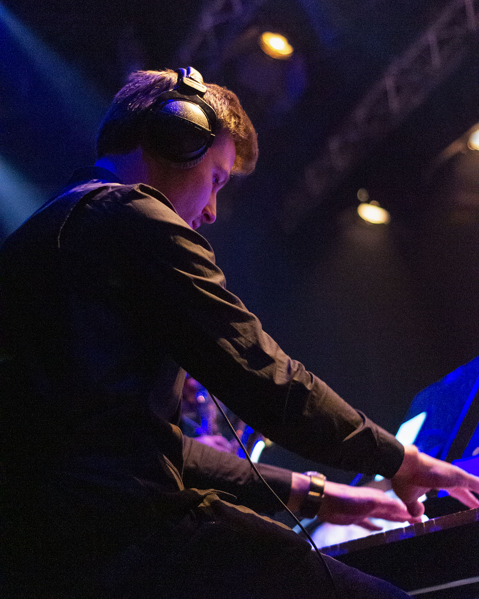

Music
Pianist & band leader
I play the piano regularly for various choirs, most notably Gospel/Pop Choir Spirit, where I am currently pianist and band leader.
I am also available as a pianist for other occasions and performances.
For bookings or enquiries: firstnamelastname at live dot nl